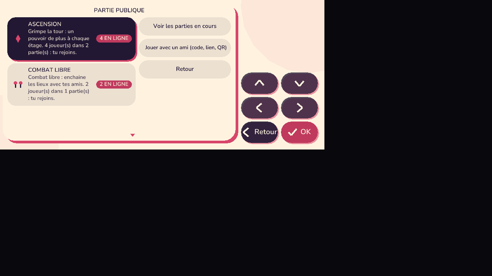
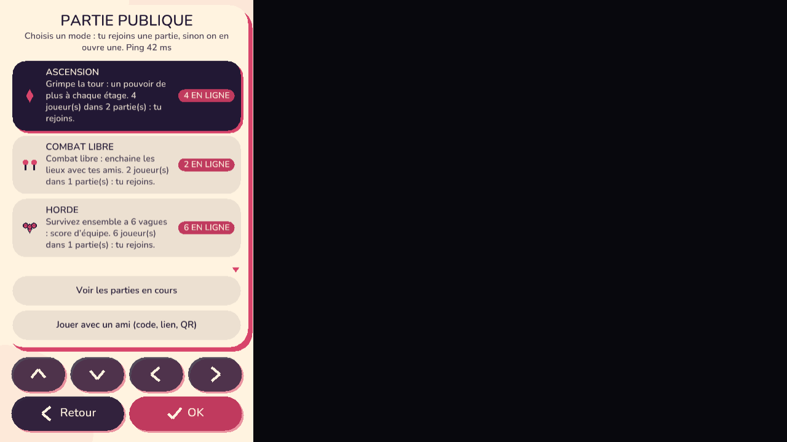
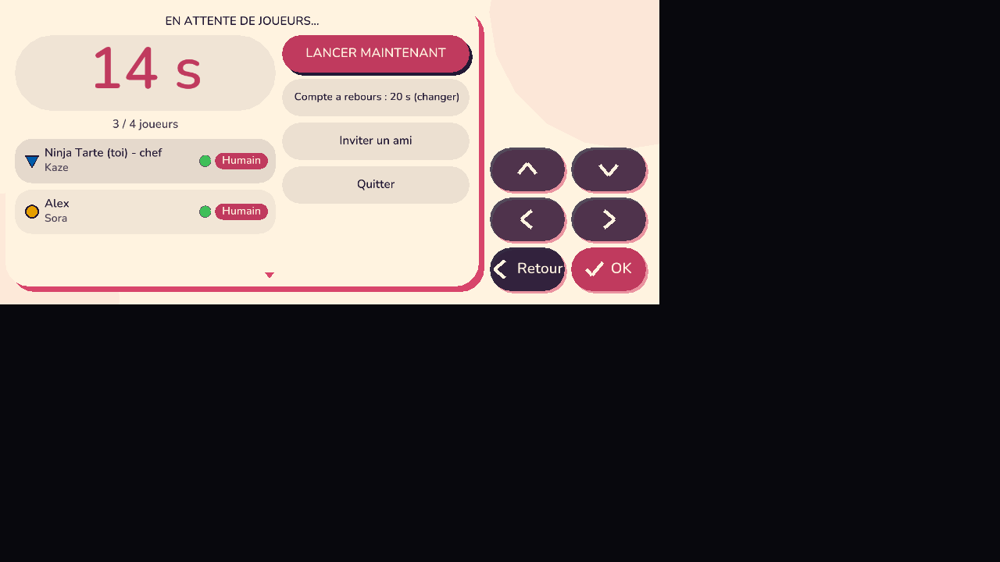
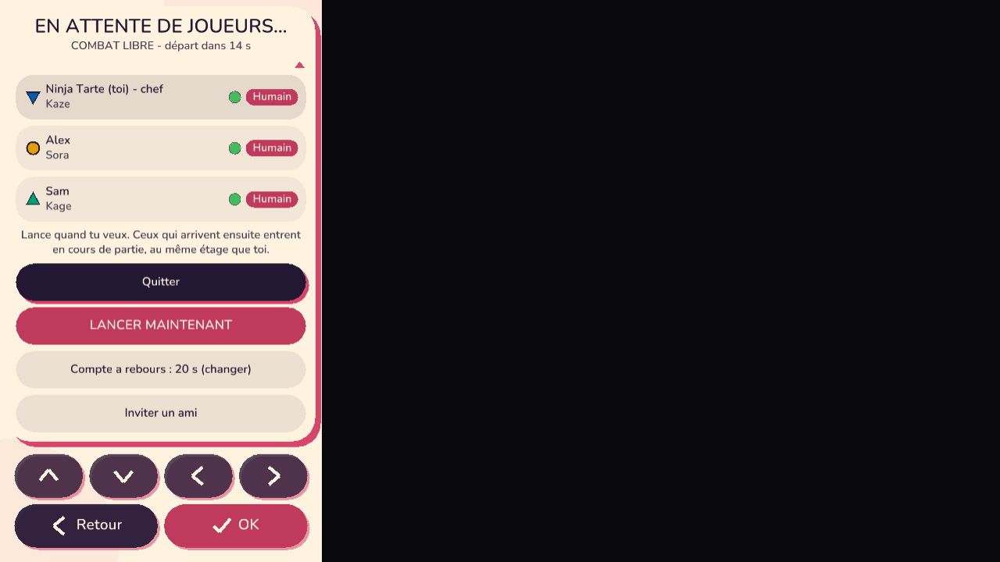
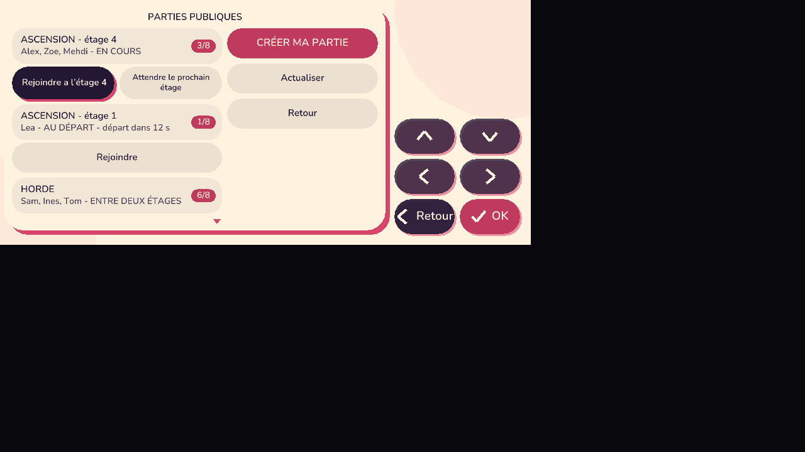
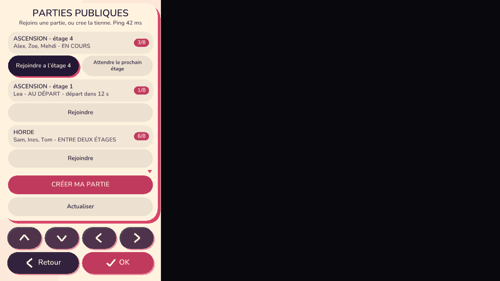
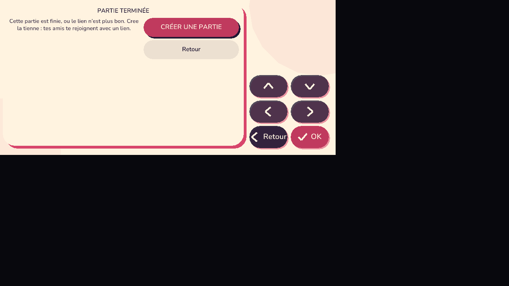
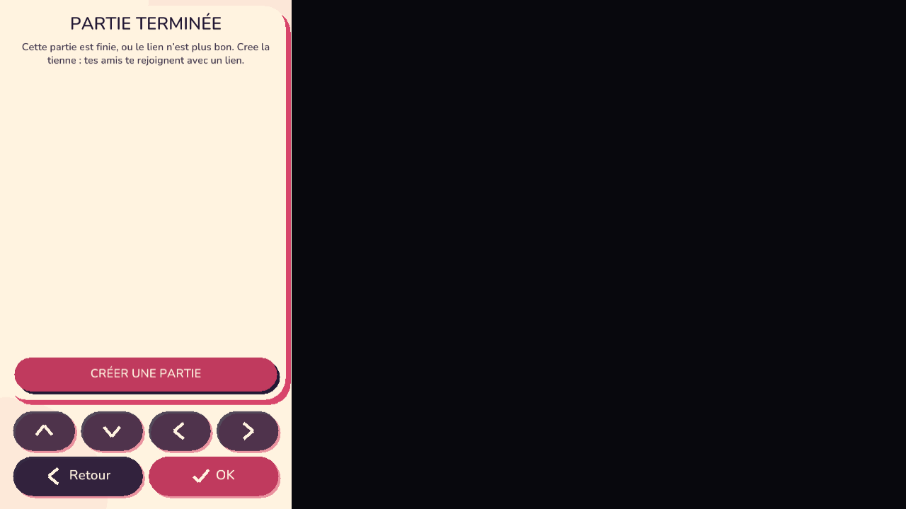

Ce qui n'allait pas : Ascension, Horde et Drapeau n'avaient aucune partie publique (chacun créait sa propre partie privée), et un jeu pas à jour créait en silence une partie vide à part. Maintenant « Partie publique » = rejoindre sinon créer, par mode.
| Étape | Ce qui se passe |
|---|---|
| 1. Partie publique | Tu choisis le mode (Ascension, Combat libre, Horde, Drapeau). Chaque carte dit combien de joueurs sont déjà là. |
| 2. Salle d'attente | Une partie du même mode au départ ? Tu la rejoins. Sinon tu en ouvres une : « En attente de joueurs… », 1 à 8 places, départ dans 20 s (le chef peut changer la durée ou toucher « Lancer maintenant »). Deux joueurs qui appuient en même temps se retrouvent toujours dans la même salle. |
| 3. Arrivée en cours de partie | Au départ ou entre deux étages : arrivée propre. En cours d'étage : tu prends l'étage actuel (même monde pour tous), protégé quelques secondes, avec le kit de rattrapage ; l'équipe voit « X rejoint l'équipe ». |
| 4. Liste des parties | Mode, étage, joueurs n/max, état (au départ / en cours / entre deux étages), ton ping. Une partie en cours propose « Rejoindre à l'étage N » ou « Attendre le prochain étage ». « Créer ma partie » est toujours là. |
| 5. Échecs | Jeu pas à jour : Mettre à jour (vide le cache et recharge). Partie pleine : Chercher une autre partie. Hors ligne : Réessayer. Jamais d'écran sans issue. |








Relais : 11 tests (course à deux, attente, rattrapage, 8 joueurs, modes séparés, version refusée). Vrai relais avec de vrais clients : deux joueurs simultanés puis arrivée en cours avec rattrapage, empreintes de simulation identiques chez tous. Détails : tools/playtest/parties_publiques.md.